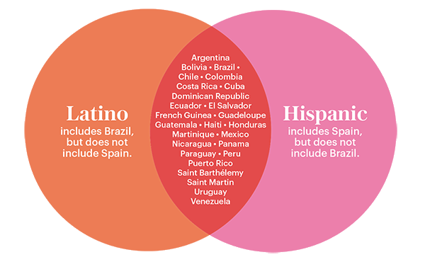

Identifying our differences
Social identity is an element that facilitates the recognition of a person in the social sphere, designating their position in a society. It can be built individually or collectively.
It is important to note that social identity is not only related to individuals, but also to groups. Social identity has an inclusion and exclusion component, because elements of the same group have the same social identity and at the same time are socially different from people from other groups.
Definitions
| Race | Ethnicity |
|---|---|
| Physical characteristics of a person | Characteristics of a group by its sociocultural aspects |
| Race is based on a racial distinction existing in society. For studies in this area, denying the existence of race would be to deny racial inequality. | An ethnic group is a group whose members identify themselves based on their cultural aspects, such as their customs or artistic traditions, in general, linked to a territory. |
| Races were distinguished by phenotypic characteristics such as skin, hair, and eye color. | The distinction of ethnic groups is made by the social and cultural characteristics of a given group and its original territory. |
-
Is race and ethnicity the same?
- “Race” is usually associated with biology and linked with physical characteristics such as skin color or hair texture. “Ethnicity” is linked with cultural expression and identification. However, both are social constructs used to categorize and characterize seemingly distinct populations.
-
Is Brazil part of latinx?
-
While the two categories mostly overlap, people from Brazil and Spain illustrate the distinction. Brazilians are Latino because the country is located in Latin America. But Brazilians aren't considered Hispanic because the country's primary language is Portuguese.

Hispanic
In a literal sense, Hispanic refers to people who speak Spanish or who are descendants of Spanish-speaking ancestry. This English word evolved from the Latin word Hispanicus, which is said to have been used to refer to people who lived in Hispania.

The term Hispanic was adopted by the US government in the early 1970s, during the Richard Nixon administration and has been used by the media ever since. The Hispanic category has also been included in the US census since 1980. Race and Hispanic origin are two separate and distinct concepts; persons who report themselves as Hispanic can be of any race. Hispanic America is the group of countries on the American continent where Spanish is spoken as an official language.
Hispanics and Latinos make up 16.3% of the American population, or 50.5 million people, forming the second largest American ethnic group after non-Hispanic whites. Most Hispanics have Mexican origins (65.5%). There are also numerous people from Puerto Rico, El Salvador, Cuba, the Dominican Republic, and Guatemala.
For many, what brings Hispanics together is not race or phenotype, but cultural elements: language, religion and family traditions, cultural values, musical styles, and ways of acting. This conception assumes that being Hispanic is not belonging to a certain race, since the Hispanic would be an ethnic group that would encompass different nationalities and races within it.
Since Hispanic refers to the language that people speak or that their ancestors spoke, it refers to an element of culture. This means that, as an identity category, it is closer to the definition of ethnicity, which groups people based on a shared common culture. However, people of many different ethnicities can identify as Hispanic, so it's broader than ethnicity. Consider that people who are originally from Mexico, the Dominican Republic, and Puerto Rico have very different cultural backgrounds, except for their language and possibly their religion. Because of this, many people considered Hispanic today equate their ethnicity with the country of origin or that of their ancestors, or with an ethnic group within that country.
The Hispanic population is rapidly growing, and demographic estimates reveal that there will be more than 80 million Hispanics in the United States in the next few years.
Latino/a
The factors that most influence Latino identity are related to certain characteristics such as place of birth, place of childhood, family origin and culture, ethnicity and language.
Portuguese, Spanish, Italian and French are European languages derived from Latin. The language serves to recall the history of a colonization system quite different from the one found beyond Brazilian borders. The term “Latin” dates from the period after the wars of independence and gains emphasis in the 1920s and 1930s, since then, many events have changed the political and geographical configuration of so-called Latin America.
The media, entertainment, and advertising agencies have increasingly highlighted this population as if it were a homogeneous community. In this way, many people who previously identified themselves as being "Mexican", "Salvadoran" or "Cuban" come to embrace a "Latin" identity, which is called a "Pan-Latin" identity, which encompasses people with origins in different parts of Latin America.
The US census absorbed this idea, making it clear that Latino is not a race, but an ethnic group. In this way, Latinos are sometimes seen as a race, sometimes as an ethnic group. Anyway, both "race" and "ethnic group" are not biological concepts, they are mere social constructions, which are invented depending on the context and interests involved in each society. It wasn't until the year 2000 that Latino first appeared in the US Census as an ethnicity option, combined with the "Other Spanish/Hispanic/Latino" response. In the most recent Census, conducted in 2010, it was included as "Other Hispanic/Latin/Spanish origin".
Latinx
The word has been adopted among people looking for a more inclusive and gender-free alternative to “Latino” or “Latina”, which, like Spanish words, are automatically tagged to mean a man or a woman, leaving no option for those who choose to identify themselves as non-binary.
The “x” does not imply a specific gender - as would 'o' (masculine) or 'a' (feminine) for nouns in Spanish - and is intended to interrupt the grammatical binary that is inherent in this language.
In recent years, the feminist struggle has increased its reach around the world. In Latin America, for example, thousands of women rallied around the
Ni una Menos
campaign, which emerged in Argentina and gained support from neighboring countries. All these factors, even those that are in decline today, gave rise to a sense of belonging and brotherhood.The same happens with the Latinx identity and the change of conditions and meanings is constant.
From Pew's data, those most likely to identify as 'Latinx' are between the ages of 18-29, a college graduate and leaning toward Democrats. Women were more likely, like men, to use 'Latinx' to describe themselves; 5 percent as opposed to 1 percent of men. That said, the Pew Research survey does not include any self-identified non-binary respondents, which is important to note as gender neutrality and inclusivity is one of the intents of using 'Latinx'.
This website is the final project of the course "Intro to Latinx" taught by the instructor Oriana Estrada held at Bellevue College in winter quarter of 2022 made by the student Agatha Hortiz.
References